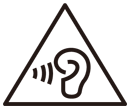

Lesen Sie diese wichtigen Sicherheitshinweise, bevor Sie das Gerät verwenden. Sie enthalten allgemeine Sicherheitshinweise für Geräte und möglicherweise auch Informationen, die nicht für Ihr Gerät gelten. Beachten Sie die Warnungen und Gefahrenhinweise, um zu verhindern, dass Sie oder andere verletzt werden und das Gerät beschädigt wird.
| Der Begriff „Gerät“ bezeichnet die Ohrhörer, das Ladeetui, das Kabel, die mit dem Produkt gelieferten Artikel sowie jegliche von Samsung zugelassenen Zubehörteile, die mit dem Produkt verwendet werden. |
Die Nichtbeachtung der Sicherheitswarnungen und -vorschriften kann schwere Verletzungen oder den Tod zur Folge haben.
Das Gerät enthält Magnete. Halte es fern von Kreditkarten, implantierten medizinischen Geräten und anderen Geräten, die von Magneten beeinflusst werden können. Bei medizinischen Geräten solltest du einen Abstand von mehr als 15 cm einhalten. Stellen Sie die Verwendung des Geräts ein, wenn Sie eine Störung Ihres medizinischen Geräts vermuten, und wenden Sie sich an Ihren Arzt oder den Hersteller des medizinischen Geräts
Verwenden Sie keine beschädigten Netzkabel oder Stecker und keine lockeren Netzsteckdosen.
Ungesicherte Verbindungen können einen elektrischen Schlag oder Brand verursachen.
Berühren Sie das Gerät, die Netzkabel, die Stecker oder die Steckdose nicht mit nassen Händen oder einem anderen nassen Körperteil.
Dies kann einen elektrischen Schlag verursachen.
Ziehen Sie nicht fest am Netzkabel, um es zu entfernen.
Dies kann einen elektrischen Schlag oder Brand verursachen.
Das Netzkabel darf nicht geknickt oder beschädigt werden.
Dies kann einen elektrischen Schlag oder Brand verursachen.
Berühren Sie das Gerät nicht mit nassen Händen, während das Gerät geladen wird.
Dies kann einen elektrischen Schlag verursachen.
Stellen Sie keine direkte Verbindung zwischen dem Plus- und Minuspol des Ladegeräts her.
Dies kann zu einem Brand und ernsthaften Verletzungen führen.
Verwenden Sie das Gerät während eines Gewitters nicht im Freien.
Dies kann einen elektrischen Schlag oder Fehlfunktionen des Geräts verursachen.
Verwenden Sie vom Hersteller zugelassene Akkus, Ladegeräte, Zubehörteile und Verbrauchsmaterialien.
• Die Verwendung eines nicht von Samsung zugelassenen Akkus oder Ladegeräts kann die Lebensdauer des Geräts beeinträchtigen oder zu einer Fehlfunktion des Geräts führen. Die Verwendung dieser Zubehörteile kann einen Brand oder das Explodieren des Akkus verursachen.
• Verwenden Sie nur von Samsung zugelassene Ladegeräte und Kabel, die speziell für Ihr Gerät entwickelt wurden. Die Verwendung von inkompatiblen Ladegeräten oder Kabeln kann schwere Verletzungen oder eine Beschädigung des Geräts zur Folge haben.
• Samsung ist nicht haftbar für die Sicherheit des Benutzers, wenn Zubehör und Teile verwendet werden, die nicht von Samsung zugelassen sind.
Tragen Sie das Gerät nicht in der Gesäßtasche oder an der Hüfte.
• Falls zu viel Druck auf das Gerät ausgeübt wird, kann es zu Schäden am Gerät, einer Explosion oder einem Brand kommen.
• Bei einem Stoß oder Sturz können Sie sich verletzen.
Lassen Sie das Gerät nicht fallen und setzen Sie es keinen starken Erschütterungen aus.
• Dies kann zu Schäden an Gerät und Akku sowie zu Fehlfunktionen und einer kürzeren Lebensdauer des Geräts führen.
• Außerdem kann dies zu einer Überhitzung, einer Selbstentzündung, einem Brand oder anderen Gefahrensituationen führen.
Gehen Sie mit dem Gerät und dem Ladegerät sorgsam um und entsorgen Sie sie ordnungsgemäß.
• Entsorgen Sie den Akku oder das Gerät niemals in einem Feuer. Platzieren Sie den Akku oder das Gerät nicht auf oder in Geräten, die Hitze erzeugen, wie beispielsweise Mikrowellengeräte, Öfen oder Heizkörper. Das Gerät kann bei übermäßiger Hitze explodieren. Beachten Sie bei der Entsorgung gebrauchter Akkus oder Geräte die örtlichen Vorschriften.
• Zerquetschen und durchstechen Sie das Gerät nicht.
• Setzen Sie das Gerät keinem hohen Druck von außen aus, da dies einen internen Kurzschluss und eine Überhitzung zur Folge haben kann.
Schützen Sie das Gerät, den Akku und das Ladegerät vor Schäden.
• Setzen Sie das Gerät und den Akku nicht sehr hohen oder sehr niedrigen Temperaturen aus.
• Extreme Temperaturen können Schäden am Gerät verursachen und die Ladekapazität und Lebensdauer von Gerät und Akku beeinträchtigen.
• Verwenden Sie keine Kabel, deren Beschichtung abblättert oder beschädigt ist. Beschädigte oder nicht richtig funktionierende Ladegeräte dürfen ebenfalls nicht verwendet werden.
• Schalte das Gerät nicht ein und benutze es nicht, wenn das Batteriefach geöffnet ist.
Bewahren Sie das Gerät nicht in oder in der Nähe von Heizungen, Mikrowellengeräten, Kochvorrichtungen oder Hochdruckbehältern auf.
• Der Akku kann undicht werden.
• Das Gerät kann überhitzen und einen Brand verursachen.
Verwenden Sie das Gerät nicht in Bereichen mit einer hohen Konzentration an Staub oder Partikeln und bewahren Sie es nicht dort auf.
Staub oder Fremdpartikel können Fehlfunktionen verursachen und führen möglicherweise zu einem Brand oder elektrischem Schlag.
Der Ladegerätanschluss und das Ende des Ladekabels dürfen nicht mit leitenden Materialien wie Flüssigkeiten, Staub, Metallspänen und Bleistiftminen in Kontakt kommen. Berühren Sie den Ladegerätanschluss nicht mit scharfen Gegenständen und verhindern Sie äußere Einwirkungen auf ihn.
Leitende Materialien können einen Kurzschluss oder die Korrosion der Geräte verursachen und dies führt möglicherweise zu einer Explosion oder einem Brand.
Platzieren Sie bei Verwendung des induktiven Ladegeräts keine Fremdkörper wie metallische Gegenstände, Magneten oder Karten mit Magnetstreifen zwischen dem Gerät und dem induktiven Ladegerät.
Das Gerät wird ansonsten möglicherweise nicht richtig geladen oder es überhitzt.
Beißen Sie nicht auf Gerät und Akku und nehmen Sie es/ihn nicht in den Mund.
• Dies kann zu Schäden am Gerät sowie zu einer Explosion oder einem Brand führen.
• Kinder und Tiere können durch das Verschlucken von Kleinteilen ersticken.
• Wenn das Gerät von Kindern benutzt wird, achten Sie auf die sachgemäße Verwendung.
Führen Sie das Gerät und mitgelieferte Zubehörteile nicht in Augen, Ohren oder den Mund ein.
Es besteht Erstickungsgefahr und es kann zu anderen ernsthaften Verletzungen führen.
Verwenden Sie keinen beschädigten oder leckenden Lithium-Ionen-Akku (Li-Ion).
Zur sicheren Entsorgung des Li-Ion-Akkus wenden Sie sich bitte an ein autorisiertes Servicecenter in Ihrer Nähe.
Die Nichtbeachtung der Sicherheitshinweise und -vorschriften kann Verletzungen oder Sachschäden verursachen.
Verwenden Sie das Gerät nicht in der Nähe anderer elektronischer Geräte.
• Die meisten elektronischen Geräte arbeiten mit Hochfrequenzsignalen. Dieses Gerät kann andere elektronische Geräte stören.
• Geräte mit Lautsprechern sind besonders anfällig für Interferenzen.
Verwenden Sie das Gerät nicht in einem Krankenhaus, Flugzeug oder Kraftfahrzeug, das durch die Hochfrequenzen gestört werden kann.
• Wenn Sie das Gerät verwenden, halten Sie einen Mindestabstand von 15 cm zum Schrittmacher ein, da dieses Gerät einen Schrittmacher stören kann.
• Um mögliche Interferenzen mit einem Herzschrittmacher zu verhindern, sollten Sie das Gerät nicht auf der Seite Ihres Körpers verwenden, auf der sich der Herzschrittmacher befindet.
• Wenn Sie medizinische Geräte benötigen, wenden Sie sich vor der Verwendung dieses Geräts an den Hersteller, um zu erfahren, ob das medizinische Gerät von der Funkfrequenz dieses Geräts beeinträchtigt wird.
• Die Verwendung elektronischer Geräte in einem Flugzeug kann die elektronischen Navigationsinstrumente stören. Halten Sie sich an die Bestimmungen der Airline und die Anweisungen des Flugpersonals. Auch wenn Sie das Gerät verwenden dürfen, muss immer der Flugmodus aktiviert sein.
• Elektronische Geräte im Auto funktionieren aufgrund der Funkfrequenz dieses Geräts möglicherweise nicht ordnungsgemäß. Weitere Informationen erhältst du beim Hersteller.
Setzen Sie das Gerät nicht starkem Rauch oder Qualm aus.
Dies kann die Außenseite des Geräts beschädigen und zu Fehlfunktionen des Geräts führen.
Sollten Sie eine Hörhilfe nutzen, wenden Sie sich an den Hersteller, um weitere Informationen zu Funkstörungen zu erhalten.
Die von diesem Gerät ausgegebene Funkfrequenz beeinträchtigt möglicherweise die Funktion einiger Hörhilfen. Wenden Sie sich vor der Verwendung dieses Geräts an den Hersteller Ihrer Hörhilfe, um zu erfahren, ob die Hörhilfe durch die Funkfrequenzen des Geräts beeinträchtigt wird.
Verwenden Sie das Gerät nicht neben Geräten oder Anlagen die Funkfrequenzen ausgeben, wie z. B. Lautsprecheranlagen oder Funktürmen.
Radiofrequenzen können Fehlfunktionen Ihres Geräts verursachen.
Schalten Sie das Gerät in explosionsgefährdeten Umgebungen aus.
• Schalten Sie das Gerät in Umgebungen mit Explosionsgefahr aus.
• Befolgen Sie in explosionsgefährdeten Umgebungen immer sämtliche Vorschriften, Anweisungen und Hinweisschilder.
• Verwenden Sie das Gerät nicht an Tankstellen, in der Nähe von Brennstoffen oder Chemikalien oder in Sprenggebieten.
• Lagern und transportieren Sie entzündliche Flüssigkeiten, Gase oder Sprengstoffe nicht am selben Ort, an dem sich das Gerät mit Zubehör befindet.
Falls ein Teil des Geräts defekt ist oder wenn Rauch bzw. ein Brandgeruch entsteht, stelle die Verwendung des Geräts sofort ein. Verwende das Gerät erst wieder, wenn es in einem Servicecenter von Samsung oder einem autorisierten Servicecenter geprüft und repariert wurde
• Zerbrochenes Glas oder Kunststoff kann Verletzungen an Händen und Gesicht verursachen.
• Falls Rauch aus dem Gerät austritt bzw. Brandgeruch entsteht, besteht das Risiko, dass der Akku explodiert oder Feuer fängt.
Befolgen Sie alle Sicherheitswarnungen und -vorschriften hinsichtlich der Nutzung von Mobilgeräten beim Autofahren.
Im Verkehr ist das sichere Fahren des Fahrzeugs vorrangig. Verwenden Sie das Mobilgerät niemals beim Fahren, wenn es gesetzlich verboten ist. Verhalten Sie sich zu Ihrer eigenen Sicherheit und der Ihrer Mitmenschen vernünftig und beachten Sie die folgenden Tipps:
• Legen Sie das Gerät in Reichweite ab. Stellen Sie sicher, dass Sie auf Ihr Gerät zugreifen können, ohne dabei den Blick von der Straße abzuwenden.
• Führen Sie keine Gespräche bei starkem Verkehr oder gefährlichen Wetterbedingungen. Regen, Graupel, Schnee, Eis und dichter Verkehr können gefährlich sein.
• Nehmen Sie keine Sprachmemos auf. Das Aufnehmen von Sprachmemos beim Fahren lenkt Sie ab und gefährdet so Ihre Sicherheit und die anderer Verkehrsteilnehmer.
• Reagieren Sie überlegt auf eingehende Anrufe und beachten Sie den Verkehr. Nehmen Sie Anrufe nur entgegen, während Sie stehen oder bevor Sie sich in den Verkehr einfädeln. Versuchen Sie, Anrufe dann zu tätigen, wenn Ihr Auto steht.
• Führen Sie keine aufreibenden oder emotionalen Gespräche, die Sie ablenken können. Teilen Sie Ihrem Gesprächspartner mit, dass Sie gerade Auto fahren.
Pflegen und verwenden Sie das Gerät ordnungsgemäß.
Bewahren Sie das Gerät an einem trockenen Ort auf.
• Feuchtigkeit und Flüssigkeit können zu Schäden an den Teilen oder elektronischen Schaltungen im Gerät führen.
• Schalten Sie das Gerät nicht ein, wenn es feucht ist. Falls das Gerät bereits eingeschaltet ist, schalten Sie es aus (ist dies nicht möglich, lassen Sie das Gerät, wie es ist). Trocknen Sie das Gerät mit einem Handtuch ab und bringen Sie es in ein Servicecenter.
• In diesem Gerät sind Flüssigkeitsindikatoren eingebaut. Wasser beschädigt das Gerät und kann zum Erlöschen der Herstellergarantie führen.
Bewahren Sie das Gerät nur auf ebenen Oberflächen auf.
Durch ein Herunterfallen kann das Gerät beschädigt werden.
Das Gerät kann bei Umgebungstemperaturen zwischen 0 °C und 35 °C verwendet werden. Bewahren Sie das Gerät bei Umgebungstemperaturen zwischen -20 °C und 50 °C auf. Bei Nichtbeachtung der empfohlenen Umgebungstemperaturbereiche kann das Gerät beschädigt oder die Lebensdauer des Akkus verkürzt werden.
• Bewahren Sie das Gerät nicht an sehr heißen Orten wie einem Autoinnenraum im Sommer auf. Andernfalls kann es zu Schäden am Gerät oder einer Explosion des Akkus kommen.
• Setzen Sie das Gerät nicht über längere Zeit direkter Sonnenbestrahlung aus (beispielsweise auf dem Armaturenbrett in einem Auto).
Bewahren Sie das Gerät entfernt von metallischen Gegenständen wie Münzen, Schlüsseln oder Ketten auf.
• Das Gerät wird möglicherweise zerkratzt oder funktioniert nicht mehr ordnungsgemäß.
• Wenn die Batteriepole mit metallischen Gegenständen in Kontakt kommen, kann dies einen Brand verursachen.
Bringen Sie das Gerät nicht in die Nähe magnetischer Felder.
• Magnetfelder können Fehlfunktionen des Geräts oder ein Entladen des Akkus verursachen.
• Karten mit Magnetstreifen wie Kreditkarten, Telefonkarten, Reisepässe und Bordkarten können durch Magnetfelder beschädigt werden.
Vermeiden Sie jeglichen Kontakt mit dem Gerät, wenn es überhitzt ist. Anderenfalls kann es zu leichten Verbrennungen, roten Punkten und Pigmentierung kommen.
• Achten Sie darauf, das Gerät bei längerer Verwendung nicht überhitzen zu lassen und vermeiden Sie längeren Hautkontakt.
• Setzen Sie sich nicht auf das Gerät und vermeiden Sie direkten, länger andauernden Hautkontakt, wenn das Gerät lädt oder an eine Stromquelle angeschlossen ist.
• Die Temperaturtoleranz ist je nach Person unterschiedlich. Seien Sie besonders vorsichtig, wenn Kinder, Senioren oder Menschen mit Behinderung das Gerät verwenden.

Schützen Sie Ihr Gehör und Ihre Ohren bei der Verwendung der Ohrhörer.
• Ist das Gehör längere Zeit lauten Tönen ausgesetzt, können Hörschäden entstehen.
• Sind Sie beim Gehen lauten Tönen ausgesetzt, könnte Sie das ablenken und einen Unfall verursachen.
• Verringern Sie vor der Verwendung der Ohrhörer immer die Lautstärke und stellen Sie die Lautstärke nicht höher ein, als dies zum Hören des Gesprächs oder der Musik erforderlich ist.
• Längerer Hautkontakt mit Fremdmaterialien auf den Ohrhörern kann zu Hautreizungen führen. Stellen Sie sicher, dass die Ohrhörer sauber und trocken sind, bevor Sie sie tragen.
• In trockenen Umgebungen kann statische Elektrizität in den Ohrhörern entstehen. Verwenden Sie die Ohrhörer nicht in trockenen Umgebungen oder berühren Sie einen metallischen Gegenstand, um die statische Elektrizität zu entladen, bevor Sie die Ohrhörer verwenden.
• Verwenden Sie beim Fahren kein Headset. Dies kann Ihre Aufmerksamkeit beeinträchtigen und einen Unfall verursachen. In einigen Regionen ist es auch gesetzlich verboten.
• Obwohl die Galaxy Buds den internationalen Sicherheitsstandards entsprechen, können durch gewaltsames Einsetzen oder längeres Tragen Schmerzen oder Hautreizungen auftreten.
• Falls beim Tragen der Ohrhörer Hautirritationen auftreten, nehmen Sie sie sofort heraus und suchen Sie einen Facharzt auf.
• Reinigen Sie die Ohrhörer nicht mit Druckluft und benutzen Sie keine Ultraschallwellen oder externe Wärmequellen, wenn Staub, Schweiß, Tinte, Öl oder Chemikalien (Kosmetik, Sonnencreme, antibakterielles Spray, Handdesinfektionsmittel, Reinigungsmittel, Insektizide usw.) mit den Ohrhörern und dem Ladeetui in Kontakt kommen. Verfärbungen oder Korrosion können Schäden an den Galaxy Buds verursachen.
• Waschen Sie die Ohrpolster mit sauberem Wasser und trocknen Sie sie anschließend gründlich. Wischen Sie die Ohrhörer mit einem weichen, trockenen Tuch ab, falls sie verschmutzt sind.
Geben Sie Acht, wenn Sie das Gerät beim Gehen oder Laufen verwenden.
Achten Sie immer auf Ihre Umgebung, um sich und andere nicht zu verletzen.
Bemalen Sie das Gerät nicht und kleben Sie keine Aufkleber darauf.
Wenn Sie allergisch auf die Farbe oder metallische Teile des Geräts reagieren, kann es zu Juckreiz, Ekzemen oder Schwellungen der Haut kommen. Ist dies der Fall, verwenden Sie das Gerät nicht weiter und suchen Sie einen Arzt auf.
Installieren Sie Mobilgeräte und deren Zubehör mit Sorgfalt.
Legen Sie das Gerät und die Zubehörteile möglichst nicht in der Nähe oder in der Reichweite eines Airbags ab. Nicht ordnungsgemäß angebrachte Geräte können beim schnellen Entfalten eines Airbags zu Verletzungen führen.
Lassen Sie das Gerät nicht fallen und setzen Sie es keinen Erschütterungen aus.
• Das Gerät wird möglicherweise beschädigt oder funktioniert nicht mehr ordnungsgemäß.
• Durch Biegen oder Verformen können das Gerät oder Teile davon beschädigt werden.
Achten Sie auf eine hohe Nutzungsdauer des Akkus und des Ladegeräts.
• Wenn ein Akku längere Zeit nicht verwendet wurde, funktioniert er möglicherweise nicht mehr richtig.
• Wenn das Gerät längere Zeit nicht verwendet wird, entlädt es sich. In diesem Fall muss es vor der Verwendung aufgeladen werden.
• Bitte beachten Sie, dass der Akku erst nach mehrmaligem, vollständigem Entladen und Laden die volle Kapazität erreicht.
• Trennen Sie das Ladegerät vom Stromanschluss, solange Sie es nicht verwenden.
• Verwenden Sie den Akku nur zu dem Zweck, für den er vorgesehen ist.
• Beachten Sie für eine höchstmögliche Lebensdauer des Geräts und Akkus alle Hinweise in diesem Handbuch. Durch Nichtbeachtung der Warnungen und Hinweise entstandene Schäden oder mangelhafte Leistung kann zum Erlöschen der Herstellergarantie führen.
• Das Gerät kann im Laufe der Zeit Abnutzungserscheinungen zeigen. Einige Teile und Reparaturen werden innerhalb der Gültigkeitsdauer von der Garantie abgedeckt. Durch die Verwendung von nicht zugelassenem Zubehör entstandene Schäden oder dadurch entstandener Verschleiß zählen nicht dazu.
Zerlegen, modifizieren oder reparieren Sie das Gerät nicht.
• Veränderungen oder Modifizierungen am Gerät können zum Erlöschen der Herstellergarantie führen. Wenn das Gerät gewartet werden soll, bringe es in ein Servicecenter von Samsung oder ein autorisiertes Servicecenter.
• Zerlegen oder durchbohren Sie das Gerät nicht. Andernfalls besteht Explosions- oder Brandgefahr.
• Der Akku darf nicht zerlegt oder wiederverwendet werden.
Beachten Sie bei der Reinigung des Geräts folgende Hinweise:
• Wischen Sie das Gerät mit einem weichen und trockenen Tuch ab und reinigen Sie den Empfänger mit der Bürste von Ohrenschmalz und Verschmutzungen.
• Reinigen Sie die Akkukontakte mit einem weichen, trockenen Tuch.
• Verwenden Sie keine Chemikalien oder Lösungsmittel. Dies kann zu einer Verfärbung und Korrosion der Außenseite des Geräts führen oder einen elektrischen Schlag oder Brand zur Folge haben.
• Schützen Sie das Gerät vor Staub, Schweiß, Tinte, Öl und chemischen Produkten wie Kosmetika, antibakteriellen Sprays, Handreinigern, Reinigungsmittel und Insektiziden. Ansonsten können Schäden am Äußeren und Inneren des Geräts entstehen oder die Geräteleistung nimmt ab. Falls Ihr Gerät mit einer der genannten Substanzen in direkten Kontakt kommt, reinigen Sie es mit einem fusselfreien, weichen Tuch.
Verwenden Sie das Gerät nicht für andere als die vorgesehenen Zwecke.
Dies kann Fehlfunktionen verursachen.
Stören Sie nicht andere, wenn Sie das Gerät in der Öffentlichkeit verwenden.
Mobilgeräte dürfen nur von ausgebildetem Fachpersonal gewartet und repariert werden.
Kundendienst durch nicht entsprechend ausgebildetes Personal kann das Gerät beschädigen und zum Erlöschen der Herstellergarantie führen.
Verbreiten Sie keine urheberrechtlich geschützten Materialien.
Verbreiten Sie durch Copyright geschütztes Material nicht ohne die Erlaubnis der Inhaltseigentümer. Dies stellt einen Verstoß gegen die Urheberrechtsgesetze dar. Der Hersteller haftet nicht für rechtliche Probleme, die durch die illegale Nutzung urheberrechtlich geschützter Materialien verursacht werden.
Haftungsausschlussklausel
Bestimmte Inhalte und Dienste, die durch dieses Gerät zugänglich sind, sind Eigentum von Dritten und durch Urheberrechts-, Patent-, Markenrechts- oder andere Gesetze zum Schutz von geistigem Eigentum geschützt. Solche Inhalte und Dienste werden nur zu Ihrer privaten, nicht gewerblichen Nutzung bereitgestellt. Sie dürfen keine Inhalte oder Dienste in einer Weise nutzen, die nicht durch den Eigentümer der Inhalte oder den Dienstanbieter genehmigt wurde. Ohne das Vorstehende einzuschränken, dürfen Sie keine Inhalte oder Dienste, die durch dieses Gerät angezeigt werden, modifizieren, kopieren, erneut veröffentlichen, hochladen, zur Verfügung stellen, übertragen, übersetzen, verkaufen, damit abgeleitete Werke schaffen oder in irgendeiner Weise oder auf irgendeinem Medium verteilen, außer wenn Sie dazu ausdrücklich durch den jeweiligen Eigentümer der Inhalte oder Dienstanbieter autorisiert wurden.
„DIE INHALTE UND DIENSTE DRITTER WERDEN OHNE MÄNGELGEWÄHR BEREITGESTELLT. SAMSUNG ÜBERNIMMT KEINE HAFTUNG FÜR DERART BEREITGESTELLTE INHALTE ODER DIENSTE, WEDER AUSDRÜCKLICH NOCH IMPLIZIT, FÜR KEINE ZWECKE. SAMSUNG WEIST AUSDRÜCKLICH JEGLICHE IMPLIZITE GARANTIE ZURÜCK, EINSCHLIESSLICH, ABER NICHT BESCHRÄNKT AUF, GARANTIEN DER MARKTFÄHIGKEIT ODER EIGNUNG FÜR EINEN BESTIMMTEN ZWECK. SAMSUNG ÜBERNIMMT KEINE GARANTIE FÜR DIE FEHLERFREIHEIT, GÜLTIGKEIT, RECHTZEITIGKEIT, RECHTMÄSSIGKEIT ODER VOLLSTÄNDIGKEIT VON IRGENDWELCHEN INHALTEN ODER DIENSTEN, DIE DURCH DIESES GERÄT VERFÜGBAR GEMACHT WERDEN, UND UNTER KEINEN UMSTÄNDEN, EINSCHLIESSLICH VON FAHRLÄSSIGKEIT, IST SAMSUNG HAFTBAR, WEDER AUS VERTRAG NOCH AUS UNERLAUBTER HANDLUNG, FÜR IRGENDWELCHE DIREKTE, INDIREKTE, NEBEN-, BESONDERE ODER FOLGESCHÄDEN, ANWALTSGEBÜHREN, KOSTEN ODER IRGENDWELCHE ANDERE SCHÄDEN, DIE AUS ODER IN VERBINDUNG MIT IRGENDWELCHEN DARIN ENTHALTENEN INFORMATIONEN ODER ALS EIN ERGEBNIS DER VERWENDUNG IRGENDWELCHER INHALTE ODER DIENSTE DURCH SIE ODER DRITTE ENTSTEHEN, SELBST WENN SAMSUNG AUF DIE MÖGLICHKEIT DERARTIGER SCHÄDEN HINGEWIESEN WURDE.“
Dienste Dritter können jederzeit beendet oder unterbrochen werden. Samsung gibt keine Erklärung ab und übernimmt keine Garantie, dass irgendwelche Inhalte oder Dienste für irgendeine Zeitdauer verfügbar bleiben werden. Inhalte und Dienste werden von Dritten mit der Hilfe von Netzen und Übertragungseinrichtungen übertragen, über die Samsung keine Kontrolle hat. Ohne die Allgemeingültigkeit dieser Haftungsausschlussklausel einzuschränken, weist Samsung ausdrücklich jegliche Verantwortung oder Haftung für irgendwelche Unterbrechungen oder Aussetzungen von irgendwelchen Inhalten oder Diensten, die durch dieses Gerät verfügbar gemacht werden, zurück.
Samsung ist weder verantwortlich noch haftbar für Kundendienste, die zu den Inhalten und Diensten in Beziehung stehen. Jegliche Fragen oder Anforderungen nach Diensten, die zu den Inhalten oder Diensten in Beziehung stehen, sind direkt an die jeweiligen Inhalts- und Dienstanbieter zu richten.
| Gleichspannung : Dieses Symbol gibt an, dass es sich bei der damit markierten Nennspannung um Gleichspannung handelt. |


 Korrekte Entsorgung dieses Produkts
Korrekte Entsorgung dieses Produkts Ordnungsgemäße Entsorgung der Akkus in diesem Produkt
Ordnungsgemäße Entsorgung der Akkus in diesem Produkt